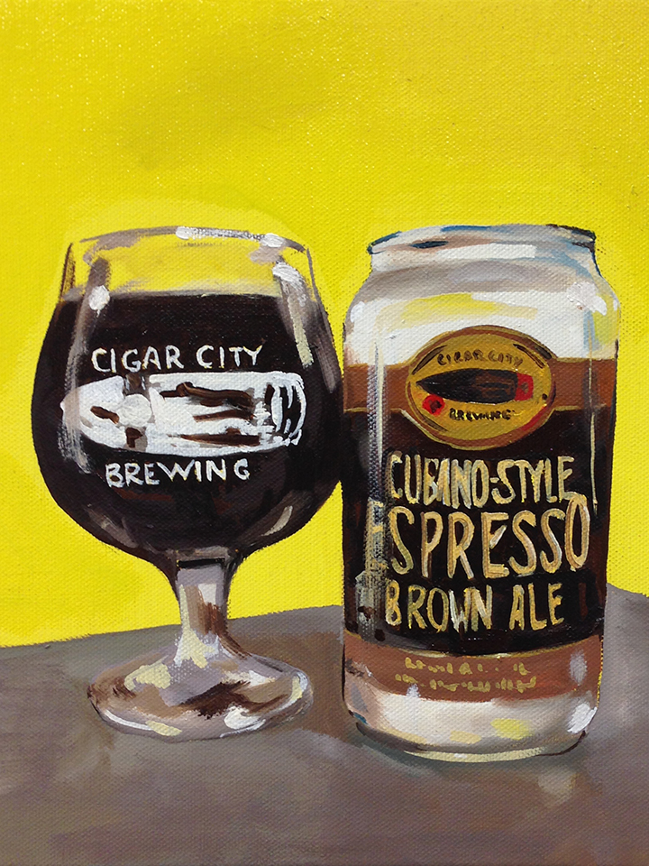

HOME
ALES
Cubano-Style Espresso Brown Ale
Cigar city Brewing
This English-style Brown Ale is brewed with a heap of Cuban-style espresso beans from Tampa’s Buddy Brew Coffee. Lactose and cacao are added as well, creating a bold ale that brings to mind a fine cup of Cuban coffee. Brewed with a proprietary blend of coffee beans produced with Buddy Brew Coffee in Tampa, Florida.
Steeped in the unique culture and history of Tampa, Florida, Cigar City Brewing began handcrafting award-winning beer in 2009. Cigar City Brewing’s ales and lagers bring to mind the sun and citrus for which Florida is known, while taking cues from the cigar industry upon which Tampa was built.
Check out their site HERE 